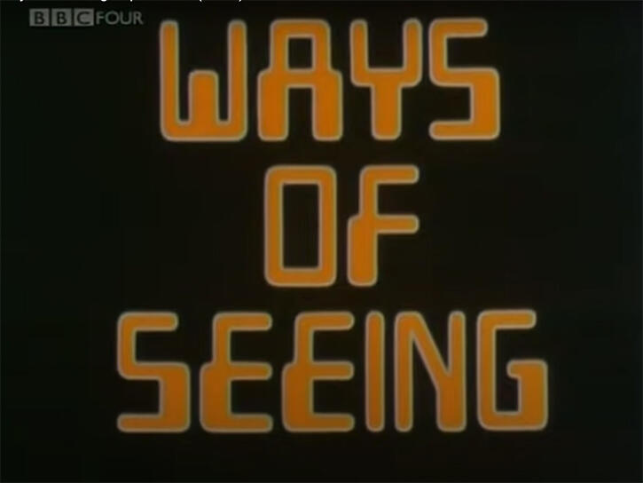

My response:
My first thought before watching the video was that there was some similarity to last week's reading material (because the name was so similar lol). But after I watched all four episodes, I realized that my thought was not necessarily correct.
In the second week of reading material, we seemed to understand why the means by which we now see things has changed. The different times we live in mean that we capture different levels of information about what exists around us. And today's four video episodes taught me why we need to look at things around us from different perspectives.
Photography started out as the best way to document the beautiful art of modern society. Even the first black and white photographs in human history contained a great deal of information. And photography has revolutionized the way mankind views art and even culture as a whole. The first thing mankind discovered was the beauty of the body. Photography and painting techniques began to be applied to the human nude, especially the wonderful female nude. Even though this is an expression of exposure and pornography in the eyes of many people in modern times, it is indeed a manifestation of the most primitive beauty of our human beings. If we take our point of view, we see the world as we want to see it. And as we gain more information, our eyes will no longer be the only element that replaces the center of the world, and the world we observe will be very different.